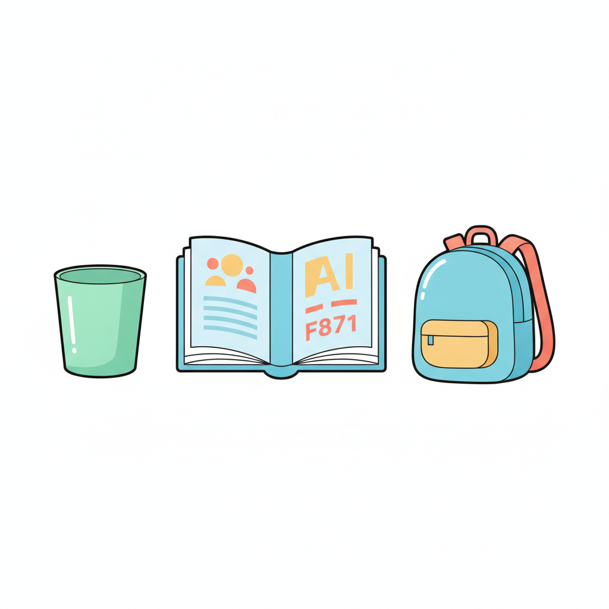

AI가 물건을 찾아 위치를 네모 박스로 짚어 줘요. 책상 위에 컵, 책, 가위 같은 물건을 1~3개 놓아 봐요.

🛡️ 화면은 저장되지 않아요. 사람 얼굴은 비추지 않아요 — 책상 위 물건만 비춰요.
🔢 엔트리 사물 인식처럼 한 번에 3개까지만 찾아요.
준비되면 시작 버튼을 눌러요
카메라 대신 그림 속 물건을 AI가 찾는 모습을 보여 줄게요. 진짜 객체 탐지도 이렇게 네모 박스로 위치를 짚어요.
버튼을 누르면 AI가 하나씩 찾아요